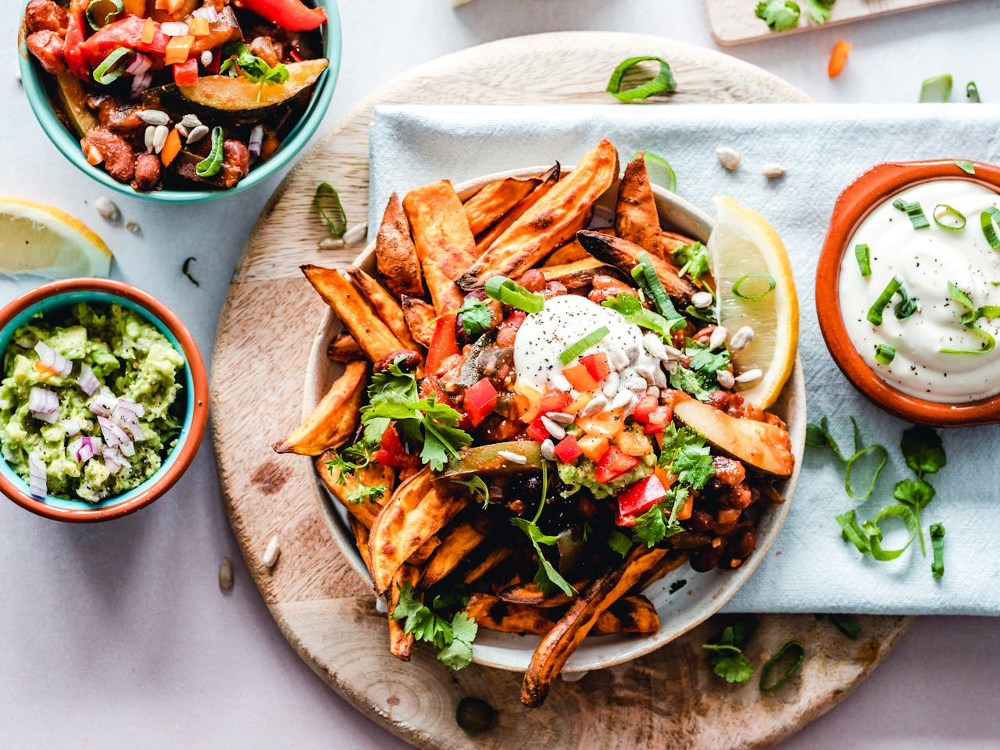
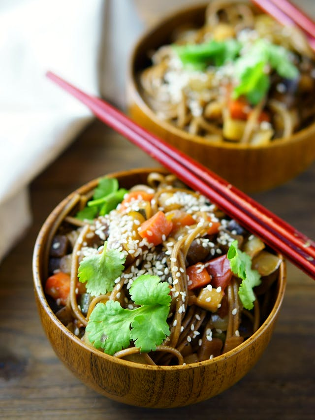

Food is one of the basic necessities of life. Food contains nutrients—substances essential for the growth, repair, and maintenance of body tissues and for the regulation of vital processes. Nutrients provide the energy our bodies need to function. The energy in food is measured in units called calories. Age, sex, weight, height, and level of activity determine the number of calories a person needs each day. Depending on age, sex, and activity level, the recommended daily caloric intake for a child aged 11 to 14 can range anywhere from 1,600 to 2,600 calories per day, with sedentary girls needing the fewest calories and active boys needing the most. For adults, this can range from 1,800 to about 3,000.
Food You should eat at least five portions of fruit and vegetables a day. They contain important vitamins and minerals that help prevent disease as well as fibre which can lower cholesterol, keep the bowel healthy and help digestion. Fruit and vegetables are low in fat, so they’re great for bulking out meals and making you feel full without adding too many calories. It’s easy to get your five a day if you spread your portions through the day.
Starchy foods like potatoes, bread, rice and pasta should make up around a third of what you eat. They’re a good source of energy and essential fibre, calcium, iron and vitamins. Gram for gram, starchy foods contain less than half the calories of fat. Try not to add extra fat to starchy food by adding butter, oil, spreads, cheese or jam – that’s just adding more calories.
Dairy and dairy alternatives are good sources of protein and vitamins. They also contain calcium, which helps keep our bones healthy and strong. Semi-skimmed, skimmed, and 1% fat milk all contain less fat than full-fat milk, but still give you protein, vitamins and calcium. Dairy-free milk alternatives include soya milk and nut milks – if you chose dairy-free milk then go for unsweetened varieties which have been fortified with calcium. Some dairy products like cheese and yoghurts can be high in salt, sugar or fat (especially saturated fat), so always check the label.
Pulses are things like beans, peas and lentils. They’re a good source of fibre, vitamins and minerals and are naturally very low in fat. They count towards your five a day but only as one portion, no matter how much you eat. Pulses are great for bulking out things like soups, casseroles and meat sauces. They add extra flavour and texture and mean you can use less meat. This reduces the amount of fat you’re eating and also means your money will go further too, as pulses are usually cheaper than meat. Other vegetable protein Other vegetable-based sources of protein include tofu, bean curd and mycoprotein and Quorn. They are full of protein, low in fat and can be used in place of meat in most recipes.
Oils and spreads Some fat in our diet is essential but most of us eat too much. Plant-based oils like vegetable, rapeseed and olive oil are rich in unsaturated fat, so they can help lower cholesterol and reduce the risk of heart disease. Lower fat unsaturated spreads are a good alternative to butter.
| Fruit🍎 | vegetable🥕 | fast food🌭 |
|---|---|---|
| mango | brinjol | noodles |
| orange | cabbege | hot dog |
| water meleon | tomato | egg bun |